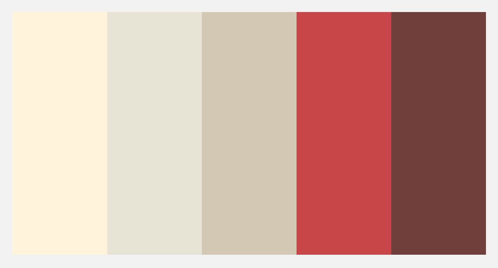

Plan My Date | Project Notes
UW | INFO 320: Information Needs, Searching, and Presentation | Oct 2014 - Dec 2014
Description
PMD (Plan My Date) is a date idea searching service. PMD finds food and event date combinations for you and your loved one. PMD is great for people who are seeking date ideas. You can search for date ideas based on location, food, events, day, and time. PMD's date ideas are based on highly rated reviewed food places and relevant real-time events. After finding a date combination, you can reserve an event through Eventful. Then you can be on your happy way with your loved one on a date!
Placed 1st in INFO 320 course competition for search applications.
Live Project
Tools Used
- HTML, CSS
- Javascript, JQuery
- API Integration
- Adobe Illustrator
PMD is the best!
There aren't that many services that help you find date ideas... or many none in existance! If you try searching for date ideas online, you'll find many magazine articles like "Top 50 date ideas!" or forum posts asking about date ideas. These articles and forums just list places to eat or places to go, which makes its hard for date seekers to filter date ideas.
Yelp is a close competitor to PMD. Through Yelp you can search for "Fun Date Night Ideas". Yelp provides highly rated places for dates, like food places and event venues. However, PMD is better because it suggests real-time events through Eventful, rather than highly rated static event venues. Real-time events are more relevant to the date idea seeker. The date idea seek wants to know what they can do, not what is a good place to do something.
How to use PMD
There are two ways to use PMD: 1) using the search boxes. 2) using the search form. The first way is great if you know what kind of date suggestions you are seeking. The second way is great if you need help finding a date ideas through location, food, and event suggestions.
How does PMD find a Date Idea?
First PMD uses user input about a Location, a Food, and an Event. PMD first searches for a food place in a given location, then using that food place's location, searches for an event near by. If PMD can't find results within the set user parameters, PMD will find other relevant results.

The reason for basing dates off of food places first is due to the API calling restrictions. Google Places sets a low limit on calling their API, compared to the unlimited calls for Eventful.
I used the Google Places API to find "Restaurants in LOCATION". Google Places API is similar to Yelp, where document places's ratings and other factors. Google Places is based off Zagat which collects restaurant ratings. To properly use this API, from the front-end I send an AJAX request to my own server in the back-end, which then calls upon Google Places, and sends back information to the front-end. From there, JSON data is parsed through using templates/containers to display information.
I used the Eventful API to search for events based on a food place's location, a user's preference, and a user's input data about date and time. Eventful keeps track of real time events, so event suggestions are always current. Using the Eventful API was simpler than Google Places, in which that I could send a direct AJAX request to Eventful to receive JSON data to parse to display information in the front-end.
By default, PMD searches for highly rated restaraunts in Seattle and events happening that day.
PMD User Interface
I was very inspired by Virgin America to create this user interface. I loved their simple, minimalistic, flat design that was colorful but not overbearing. I wanted a color pallet that emulates affection and love, so I choose a Good Tea Morning Pallet.

PMD's Features
Random Dates
If you can't decide what kind of dates to search for...there's a search form to help you decide your date. Or you could input no information into the search boxes and get random date ideas.
Reservations
Did you find a date idea? Great! You can reserve via Eventful that event by clicking on it's title!
PMD's Future Features
- - Add reservations to food places via OpenTable API
- - Add map and directions between food places and event via Google Map API
Bug Notes
- - Susceptible to script injections
- - Doesn't handle improper queries well
Source Code on GitHub
Curious to know how it's all done? Find my work on GitHub.